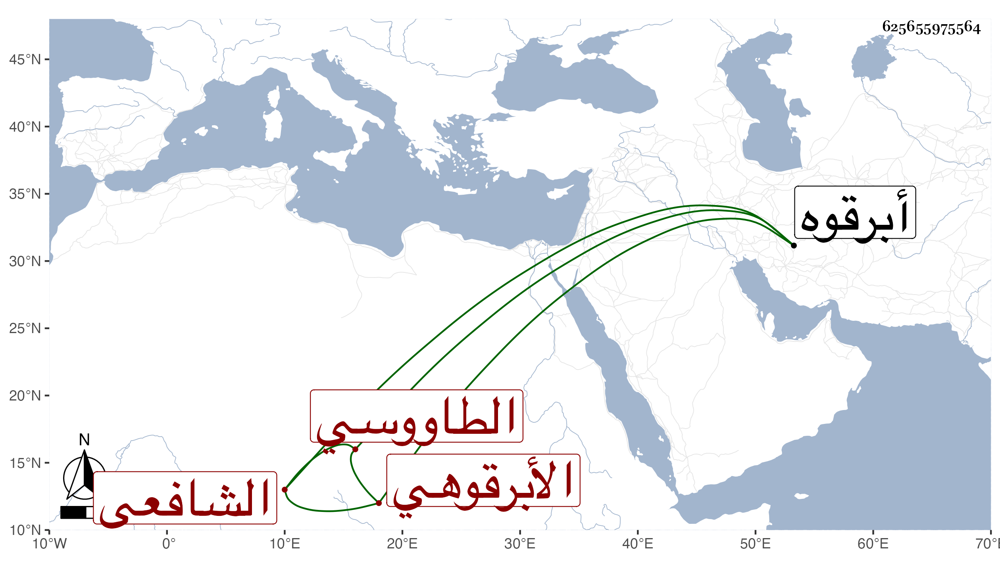

0902Sakhawi.DawLamic.ITO20230111-ara1.EIS1600.625655975564
Biography ID: 625655975564
93
عبد الله بن عبد القادر بن عبد الحق بن عبد القادر بن محمد بن عبد السلام الجلال أبو الكرم بن أبي الفتوح بن أبي الخير الطاووسي الأبرقوهي الشافعي ويلقب جد أبيه بالحكيم والد الشهاب أحمد وأخو عبد الرحمن الماضيين ولد في صفر سنة اثنتين وستين وسبعمائة بأبرقوه وتلا لنافع وابن كثير وعاصم على الشمس عبد الرحمن بن الصدر محمد بن الزين علي الإصبهاني وأجاز له بهابل وبباقي السبعة وأخذ العلوم عن جماعة منهم وأبوه وعليه وعلى عمه الصدر أبي إسحاق إبراهيم سمع الحديث وأجاز له ابن أميلة والصلاح بن أبي عمر والزفتاوي وأحمد بن عبد الكريم البعلي وابن رافع وابن كثير وابن المحب وآخرون ، وتقدم روى عنه ابنه ووصفه بقاضي القضاة المتقنين شيخ الإسلام والمسلمين وأرخ وفاته في يوم الجمعة سابع ذي القعدة سنة ثلاث وثلاثين .
